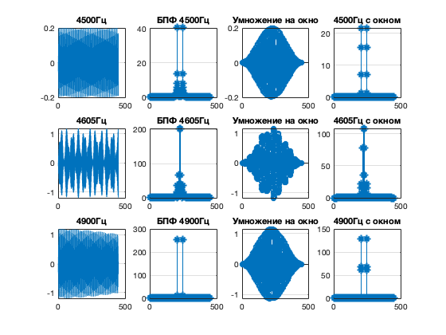
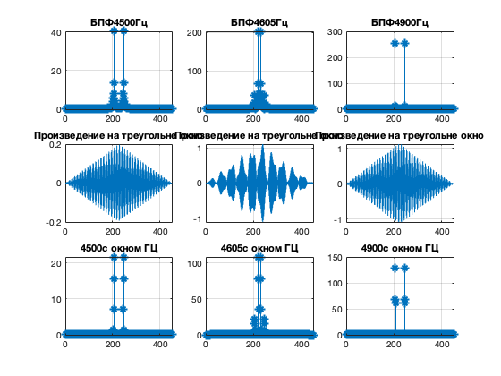

clear;
close all;
fs = 9000;
ts = 0 : 1/fs : 0.05-1/fs;
N = length(ts);
f01 = 4500;
f02 = 4605;
f03 = 4900;
fp = 4905;
ap = 0.2;
x1 = sin(2*pi*f01*ts)+ap*sin(2*pi*fp*ts);
x2 = sin(2*pi*f02*ts)+ap*sin(2*pi*fp*ts);
x3 = sin(2*pi*f03*ts)+ap*sin(2*pi*fp*ts);
X1 = abs(fft(x1));
X2 = abs(fft(x2));
X3 = abs(fft(x3));
figure;
subplot(3, 4, 1);
plot(x1), grid on; title([num2str(f01), 'Гц']);
subplot(3, 4, 5);
plot(x2); grid on; title([num2str(f02), 'Гц']);
subplot(3, 4, 9);
plot(x3); grid on; title([num2str(f03), 'Гц']);
subplot(3, 4, 2);
stem(X1, "Marker", '*'); grid on; title(['БПФ ', num2str(f01), 'Гц']);
subplot(3, 4, 6);
stem(X2, "Marker", '*'); grid on; title(['БПФ ', num2str(f02), 'Гц']);
subplot(3, 4, 10);
stem(X3, "Marker", '*'); grid on; title(['БПФ ', num2str(f03), 'Гц']);
h = hanning(N)';
x1w = x1.*hanning(N)';
x2w = x2.*hanning(N)';
x3w = x3.*hanning(N)';
x1t = x1.*triang(N)';
x2t = x2.*triang(N)';
x3t = x3.*triang(N)';
subplot(3, 4, 3);
stem(x1w), grid on; title("Умножение на окно");
subplot(3, 4, 7);
stem(x2w), grid on; title("Умножение на окно");
subplot(3, 4, 11);
stem(x3w), grid on; title("Умножение на окно");
X1w = abs(fft(x1w));
X2w = abs(fft(x2w));
X3w = abs(fft(x3w));
subplot(3, 4, 4);
stem(X1w, "Marker", '*'); grid on; title([num2str(f01), 'Гц с окном']);
subplot(3, 4, 8);
stem(X2w, "Marker", '*'); grid on; title([num2str(f02), 'Гц с окном']);
subplot(3, 4, 12);
stem(X3w, "Marker", '*'); grid on; title([num2str(f03), 'Гц с окном']);
figure;
subplot(3, 3, 1);
stem(X1, "Marker", '*'); grid on; title(['БПФ' ,num2str(f01), 'Гц']);
subplot(3, 3, 2);
stem(X2, "Marker", '*'); grid on; title(['БПФ' ,num2str(f02), 'Гц']);
subplot(3, 3, 3);
stem(X3, "Marker", '*'); grid on; title(['БПФ' ,num2str(f03), 'Гц']);
subplot(3, 3, 4);
plot(x1t); grid on; title("Произведение на треугольне окно");
subplot(3, 3, 5);
plot(x2t); grid on; title("Произведение на треугольне окно");
subplot(3, 3, 6);
plot(x3t); grid on; title("Произведение на треугольне окно");
subplot(3, 3, 7);
stem(X1w, "Marker", '*'); grid on; title([num2str(f01), 'с окном ГЦ']);
subplot(3, 3, 8);
stem(X2w, "Marker", '*'); grid on; title([num2str(f02), 'с окном ГЦ']);
subplot(3, 3, 9);
stem(X3w, "Marker", '*'); grid on; title([num2str(f03), 'с окном ГЦ']);
 